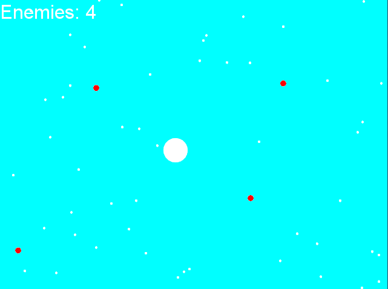

Here you will find a collection of my work. Class projects, games, experiments, etc.
All files on this page are distributed via my Dropbox. Click the images for an enlarged view.
--- Games ---
| Avoid the Balls | Download exe Visual Studio Project |
|---|---|
|
A small game made with SFML and OpenGL.
This game was created as a simple example of a game loop in SFML. It also demonstrates the use of a generic GameObject
class and how polymorphism is used in a game.
|  |
{kind=link}
| Amaball | Download Amaball |
|---|---|
|
This is a game where you guide a little ball through various levels collecting gems. It was designed
as a casual game to chill out to.
The game was never officially 'finished'. Right now it's version 0.42. Made with Game Maker. |  |
| Layered | Download Layered |
|---|---|
|
Layered is a platform game that also involves your memory. You will be charged with the task
of memorizing the location of three differently colored platforms. Each block
corresponds to a layer. Red for layer 1, green for 2, blue 3. You can only land on a red
block when you're on layer 1,etc.. When you start the level all the blocks will become black.
You must then navigate your way to the finish while collecting all of the yellow/black gems in the level.
Made with Game Maker. |  |
--- Class Projects ---
Colliding balls with a heap |
Download |
|---|---|
| This is a program that was assigned as part of my abstract data types class. The initial program (which was provided) predicts when balls will collide. It finds the minimum time and then animates them until that collision occurs. This way all the collisions need not be checked every step (which would be sloooooow). The collision times we're maintained in a 2D array, and the running time was O(n^2) as a result. My task: Replace the array with a min-heap. With the min-heap the run time can be brought down to O(nlogn). With 2000 balls there was a 142% increase in framerate and a 58% decrease in execution time. Not too shabby. Run the program via command line: "Program2.jar XXX" where XXX is either the number of balls to randomly generate, or a file with info about balls (samples provided) |  |
--- Miscellaneous Programs and Utilities ---
Car Maintenance Tracker |
Download .exe Source Code |
|---|---|
|
This little command line program keeps track of your car maintenace. It's
something I built because I was tired of writing down, erasing, and losing the piece of
paper with all my maintenance checks. When you first start the program it'll ask you to log the last time you performed each task. It will also bug you that the 'intervals' file doesn't exist, it'll make the file for you. |
{kind=link}
| Car Rental Invoice Tracker | Download .exe Source Code |
|---|---|
|
This is a DOS program for a faux car rental company. You can enter invoices and keep track of profits.
This program was built as part of a C++ class I took. The program was built in sections as we went
through the class learning different object-oriented concepts.
Sure, it's just homework for a class, but it's an application that actually does something useful. |  |